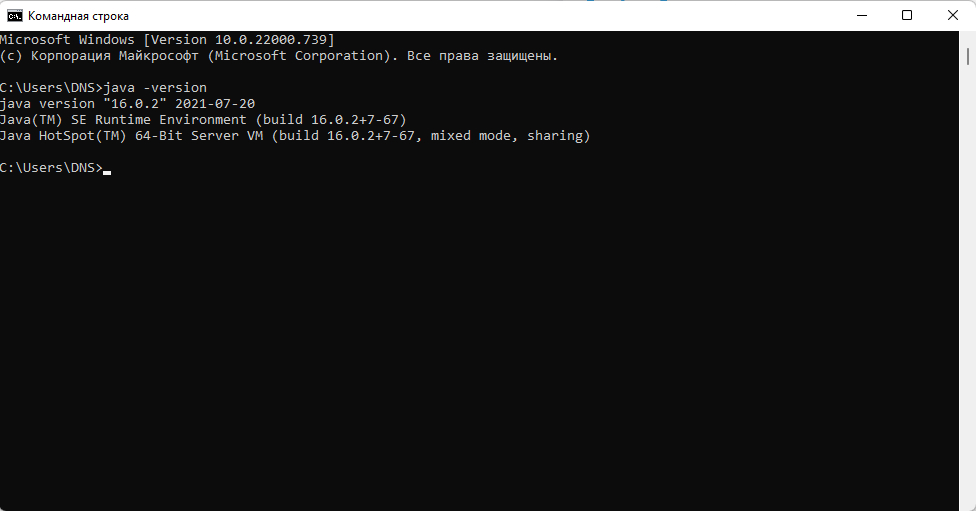
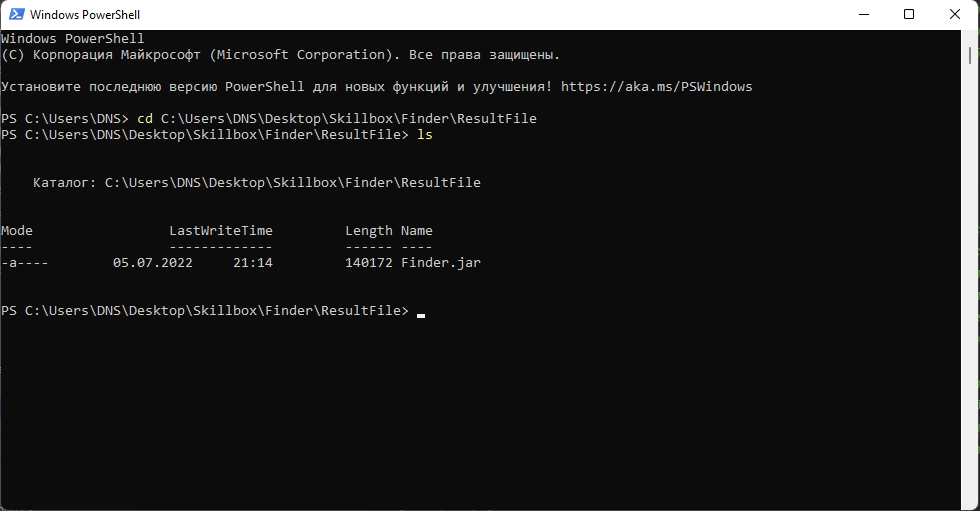
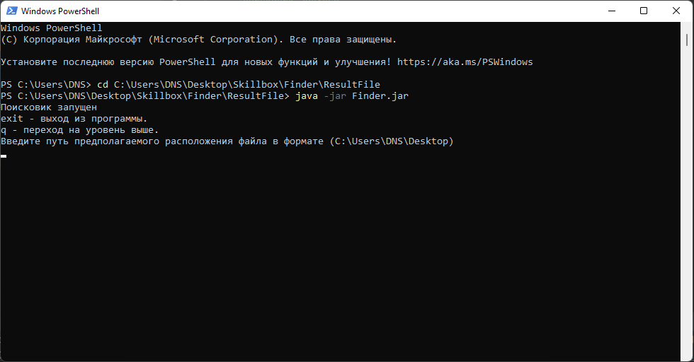
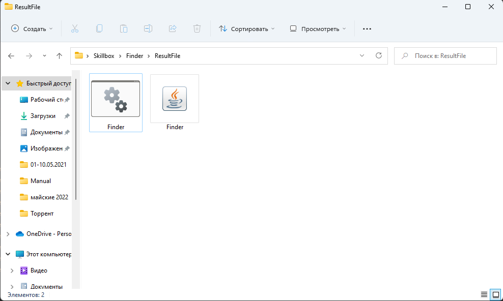

Package <Unnamed>
В данном проекте я буду отрабатывать навыки и добавлять новый фичи по мере освоения новых инструментов.
На данный момент поисковик не имеет графического интерфейса, он будет добавлен чуть позже, как дойду до изучения сего кунфу=)
В планах:
- добавление логирования, для отслеживания работы программы и исправления багов;
- добавление графического интерфейса;
- добавление многопоточности;
- история поиска и поиск с последнего места;
- добавления изменения настроек управления;
- и др.
- для Windows JDK-17
- для Linux Debian JDK-17
- для Linux Ubuntu JDK-17
- для Mac OS JDK-17
Должна вывестись информация показанная ниже на картинке.

Далее с помощью команд cd (один пробел) 'Адрес дирректории где лежит файл Finder.jar' переходим в папку расположения исходного файла.
Например cd C:\Users\DNS\Desktop\Skillbox\Finder\ResultFile и командой ls убеждаемся, что файл находится в этой папке.

Как только мы убедились, что файл на месте выполняем последнюю команду java -jar Finder.jar
если всё прошло успешно, то радуемся жизни, если нет пробуем ещё))

Если всё же ты дочитал до конца, то раскрою секрет как запускать файл по двойному клику.
Всё просто нужно дважды кликнуть по файлу с расширением .bat и произойдёт чудо

Бывают ситуации, что этот волшебный файлик пропал без следа или его похитили массоны и просят выкуп. Не беда прочти что ниже и узнай как его создать заново
Создаём в блокное файлик, записываем команду java -jar Finder.jar
и сохраняем его под именем Finder.bat.
по остальным ссылкам, что ниже наполнение я произведу позже как разберусь как правильно воевать с кодировками ибо с кириллицей дружить не хочет HTML.=)
- Since:
- 1.0
- Version:
- 1.0
- Author:
- Aleksandr Isaev
-
Class Summary